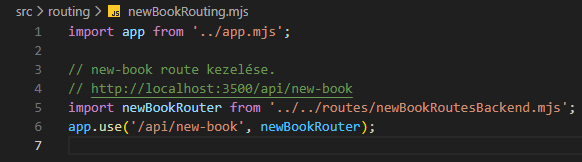
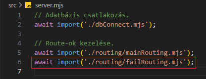
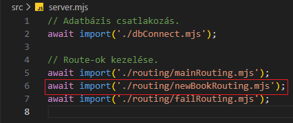

Új könyv felvétele - newBookRouting.mjs
Új könyv felvétele - newBookRouting.mjs

Ebben a részben szerkesztjük az src/routing mappában a newBookRouting.mjs állományt, amelyben összekötjük a /api/new-book route-ot a logikával.
-
Szerkesszük a
newBookRouting.mjsállományt.-
import app from '../app.mjs';- azappobjektum alapértelmezett beimportálása. -
import newBookRouter from '../../routes/newBookRoutesBackend.mjs';- anewBookRouterfüggvény alapértelmezett beimportálása. -
app.use('/api/new-book', newBookRouter);- ausemiddlewaresegítségével a/api/new-bookroute-hoz csatoljuk anewBookRouterfüggvényt.
Azaz bármikor is küldünk egyhttp://localhost:PORT/api/new-booklekérést a webszervernek, akkor az ehhez tartozó logikával tér vissza.
-
-
Szerkesszük újra a
server.mjsállományt. és-
await import('./routing/newBookRouting.mjs');- importáljuk be anewBookRouting.mjs-ben létrehozottpromise-t.
-